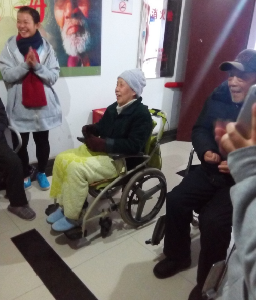

信息院：情牵夕阳，奏响冬日暖歌
文/湖南大学信息科学与工程学院青年志愿者协会黄章冠
爱心在延续，温暖在传递。2015年12月5日，湖南大学信息科学与工程学院计科1501班的同学在院青协干事的带领下前往长沙市第一福利院探望老人，延续着送温暖行动，给老人们送去了问候与关怀。
下午两点半，天空中飘着冬雨，然而这并不能阻止同学们的脚步，早已集合完毕，准时出发，乘坐公交车前往福利院。

刚到福利院，同学们便去找老人聊天，陪他们聊家常，了解他们的日常生活。虽说一些同学略显羞涩，不过通过聊天很快融入了队伍。路过一个房间，一些同学看见一位爷爷静静地坐在椅子上，同学们进去问候并得知爷爷的电视看不了了，就自告奋勇的当起了“修理工”，这里看看，那里看看，虽然最后以失败告终，没能修好，爷爷还是感受到了同学们的心意，高兴地向同学们表示感谢。不远的另一个房间中，两个奶奶在专注的看电视，同学们不忍打扰，静静的坐下陪奶奶看电视，因为同学们的加入，屋内顿时多了几分生气与温馨。
不远处，走廊里传来了阵阵歌声，原来是老人与同学们在开“演唱会”，走廊上的灯光让老人的演出增添了几分舞台效果。坐在轮椅上的爷爷奶奶时而合唱时而独奏，同学们也跟着唱，让这冬日里冰冷的走廊多了几分温暖。歌曲一首又一首，最后爷爷为了答谢同学们的到来，给同学们朗诵起了名词《满江红》，当读至“莫等闲白了少年头时，空悲切”时，爷爷用激昂的声音激励同学们努力学习，珍惜时光，不能碌碌无为，爷爷字字句句，语重心长，同学们都认真聆听，接受爷爷的教诲。
分别总是在所难免，同学们怀着不舍的心情与老人们照起了“全家福”，冬日的冰雨冷风在这温馨的“家庭”面前早就被抛到九霄云外。
福利院之行延续了敬老爱老的优良传统，在同学们课余时间充实了同学们的精神生活，提升了同学们的精神境界。敬老爱老，是一股暖流，是一曲不变的冬日暖歌！